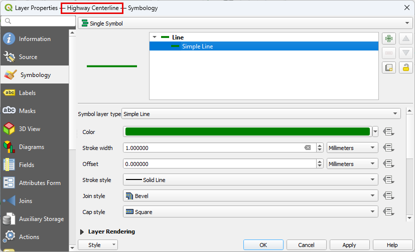
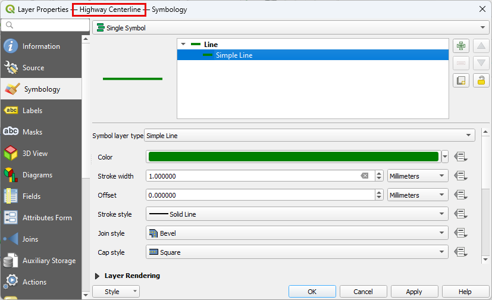

Mitigation Design#
Overview
Coastal flood mitigation practices include improving drainage, identifying critical infrastructure, protecting evacuation routes, protecting and restoring natural flood barriers. This lesson cannot cover the topic fully but can help show how QGIS and FLO-2D can be used to study mitigation plans. Mitigation models can help determine if potential designs are successful. Mitigation methods can include:
Protect critical infrastructure
Raise roadway, seawalls, and jetties
Improve culverts, tide gates, and pumps
Modify base flood elevation for new construction
Improve basin storage
Restore natural flood management
Improve drainage maintenance plans
Required Data
File |
Content |
|---|---|
*.shp |
Highway Centerline |
*.shp |
Mitigation Polygon |
*.tif |
Elevation |
Data Location: \Coastal Training\Project Data\Mitigation Design
Step 1. Load the data#
Collapse the Layers.

Click the External Data Group.
Drag the Mitigation and Highway shapefiles onto the map.

Change the symbology of the new layers to make them more visible.
 

Step 2. Load Open Street Map#
Click Quick Map Services and load the Open Street Map Standard.
Organize the Map Layers.
Uncheck Aerial images and elevation.
Note
Open Street Map is useful to help find important features. It has excellent symbology. This map source is a raster so it does not have selectable attributes like a vector layer. It is still helpful for map browsing.
Step 3. Run OSM Downloader#
Right click the blank area at the bottom of the layers list.
Add a new group called OSM Download.

Click the new group and then Click the OSM Downloader icon.
Use the mouse to draw a rectangle around the project area.

The downloader will download vectorized map data from the OSM database.
Save the data as OSM Download.osm file in the Mitigation folder.
The Open Street Map layers are now vectorized into polygons, points, and polylines.

Step 4. Open data connection#
Note
ArcGIS Online services can be loaded into QGIS maps. This allows users to connect to data that is hosted on local, state, and federal government sites.
Click Layers >> Add Layer >> Add ArcGIS REST Server Layer.
Click the Load button and find the Open Data Connection.xml file in the Mitigation folder.
Click Select All and Import.
Any of these layers can be added to the map.
Any new REST connection can be created even if it requires authentication.
Step 5. Modify Highway 41#
Note
Now that some data loading methods have been identified, proceed with some simple mitigation changes.
Warning
Any mitigation change can relieve flooding locally while increasing flooding in other areas. Always use a project area that is large enough to show potential flood changes downstream or away from the mitigation location.
Collapse the OSM Download group and uncheck it.
Click the Highway Centerline layer.
Click the Select button.
Use the select tool to select Highway 41 polyline.

Collapse the FLO-2D Widgets and open the Grid Tools Widget.
Select the Correct Grid Elevation button.
Fill the window as shown below and click OK.

Note
This is a simple way to raise grid element elevation. It uses a correction tool to add or subtract elevation from a group of cells that are within buffer.
Step 6. Reset channel elevation#
Zoom to the end of the channel and click the Mitigation Polygon Layer.
Click the Select button.
Select the Polygon that covers the end of the channel.
Collapse the Widgets and open Grid Tools.
Click the Correct Grid Elevation button.
Fill the form as shown below and click OK.
Close the message when the grid elevation correction is complete.
Note
This step can set or re-set the elevation of grid elements within a polygon. Use it to correct elevation for new grading or new basin design. Use it to correct elevation along a channel or at a headwall. It is a very versatile tool.
Step 7. Improve a culvert#
Select culvert CU10.
Change the width to 5 ft and multiple barrels to 3.
Click the Schematize Culverts button.
Step 8. Coco1 pump#
Select Coco1.
Add a pump to this system by modifying the rating table.
Assume the pump uses a steady flow of 100 cfs.
Note
If a larger pump is used, any value can be applied to match the discharge of the pump plus the discharge of the flow through the gated weir.
Add 100 cfs to the depths above 5ft. This means the pump will turn on at 5 ft of depth.
Important
Since step 6 and 7 didn’t change the position of a culvert, the Schematize button is not needed. The tables were automatically updated when the data was modified in the widget and table editor.
Step 9. Save and export#
This is a good point to save project.

Export the data files to the Mitigation Test folder.

All data files will be created in the selected project folder.
It is not necessary to schematize the storm drain system since no work was added to the storm drain. Click Yes to continue.
No changes are needed for this project. Click OK to continue and close the next few messages.
The project has now been exported.